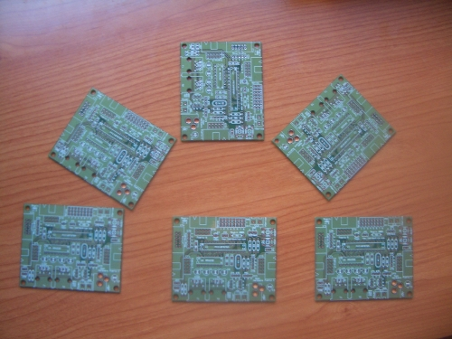

Para el desarrollo del hardware libre no sólo es necesario emplear tiempo en el diseño, sino que hay que invertir dinero en la fabricación de los circuitos impresos para comprobar que funcionan correctamente.
Para validar la nueva Skypic-2009, hemos sacado una tirada de 25 PCBs en ELATE, SA.
Queremos que participes con nosotros en la financiación del hardware libre. Para ello podremos a la venta una edición limitada de 20 Pcbs de la Skypic 2009 al precio de 10€ (+ 2€ de gastos de envío).
Además del PCB, pondremos tu nombre en la página de la Skypic para que figures como uno de los impulsores del hardware libre.
Los interesados enviad un correo a juan@iearobotics.com e indicad vuestros datos para el envío. Los pagos se harán mediante transferencia bancaria.
Esperamos vuestra colaboración para ayudarnos a seguir desarrollando hardware, software y robots libres. Muchas gracias 🙂